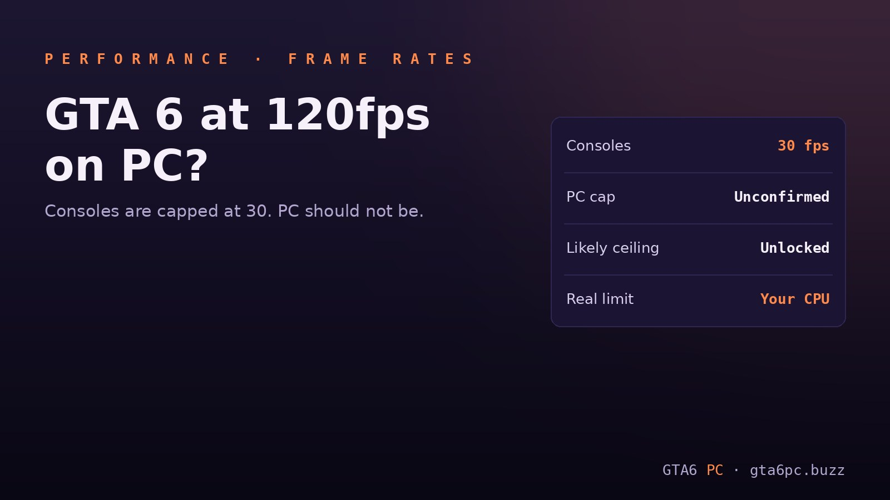

Will GTA 6 run at 120fps on PC?
GTA 6 runs at 30 frames per second on every console, including the PS5 Pro. That has PC players asking the obvious question: will the PC version go further, and could it reach 120fps? The honest answer is that nothing is confirmed, because the PC version is not announced. But the evidence from Rockstar's own statements and its last PC ports points in a clear direction.

Consoles are locked at 30fps
Start with what is confirmed. GTA 6 runs at 30 frames per second on PlayStation 5 and Xbox Series X|S, and there is no 60fps performance mode at launch. Rockstar's head of development Rob Nelson said during a pre launch visit to Rockstar North that the game was running at 30fps on consoles, with a 60fps option undecided. Rockstar technology production director Marc Chambers went further, telling Kotaku there will be no 60fps or even 40fps mode on any launch console, because the CPU is not powerful enough to run the game's complex simulation at higher frame rates. Engadget reported his comments on November 18, 2026.
Digital Foundry's testing after launch backs that up. After more than 100 hours with the console versions, it found the PS5 and Xbox Series X holding 30fps at 1440p, with dips into the high 20s in heavy scenes. The PS5 Pro, despite a faster GPU and ray traced shadows, is still capped at 30fps. The Xbox Series S mostly sits in the mid to high 20s. This is not a settings choice. It is the hardware limit of the current consoles for this particular game.
The cap is about the CPU, not the GPU
This is the part that matters for PC. Going from 30fps to 60fps cuts the time available to prepare each frame from 33.3 milliseconds to 16.7 milliseconds. Rockstar says the console CPUs cannot finish the game's simulation in that shorter window. The simulation is everything that is not drawing pictures: pedestrians, traffic, police AI, physics and the world systems that make Leonida feel alive. A faster graphics card cannot do that work.
That is why Digital Foundry said before launch that 60fps would be genuinely challenging on PC, a verdict GamesRadar+ read as a port that would struggle on anything but the latest CPUs. The console CPUs are eight core Zen 2 chips running at 3.5 to 3.8 GHz with 16 GB of shared memory. A modern PC CPU is much faster per core, so it should clear the bar the consoles cannot. But the point stands: for GTA 6, frame rate is decided by the processor first and the graphics card second. Our system requirements guide explains the same conclusion from the console hardware.
| Platform | Frame rate | Why |
|---|---|---|
| PS5 | 30fps, dips to high 20s | Zen 2 CPU caps the simulation |
| Xbox Series X | 30fps, slightly smoother with VRR | Same Zen 2 CPU limit |
| PS5 Pro | 30fps | Faster GPU, same CPU limit |
| Xbox Series S | Mid to high 20s | Weakest console hardware |
| PC (unannounced) | Expected unlocked | Rockstar's PC ports uncap frame rates |
What Rockstar's PC ports did before
Rockstar has never shipped a capped PC port of a modern open world game. GTA 5 on PC has an unlocked frame rate, and the Enhanced edition released in 2025 runs at 4K and 120fps with ray tracing on strong hardware. Red Dead Redemption 2 on PC is also unlocked and can exceed 60fps with powerful hardware. Red Dead Redemption on PC, the studio's most recent port from October 2024, officially supports native 4K resolution at up to 144Hz. That is three PC ports in a row with high refresh rate support, and the newest one advertises 144Hz as a headline feature.
None of that confirms 120fps for GTA 6, because the game itself is more demanding than any of those ports. But it does confirm the studio's habit: on PC, Rockstar removes the cap and lets the hardware decide. If the PC version follows the same pattern, the frame rate ceiling will be your hardware, not the game.
What 120fps would need from your PC
Reaching 120fps means preparing a frame every 8.3 milliseconds, four times faster than the consoles manage. Realistically, that needs three things. First, a fast modern CPU, because the simulation is the bottleneck and only a faster processor shortens it. Second, a strong graphics card, because 120fps still means drawing the world 120 times a second. Third, a monitor that can show it: a 120Hz or higher display, ideally with VRR so that dips below 120 still look smooth instead of stuttering.
At lower resolutions the CPU matters even more, because the graphics card finishes its work quickly and waits on the processor. At 4K the graphics card takes over as the limit. That is why 1440p with a high refresh rate is the realistic sweet spot for most players chasing 120fps, while 4K at 120fps will need top end hardware. Our PC build guide and GPU guide cover the hardware side in detail.
Frame generation is not a shortcut
Upscaling and frame generation will probably help, and our DLSS and FSR guide covers what to expect. But it is worth being clear about what frame generation does. It creates extra frames between real ones, so the picture looks smoother, but the game itself still runs at the real frame rate underneath. It does not make the simulation faster, and it adds a small amount of input lag. For a game where the CPU is the limit, frame generation is a useful polish on top of a fast system, not a replacement for one. DLSS upscaling is the more useful tool here, because it lowers the GPU load and leaves more headroom for the CPU bound parts of the game.
The bottom line
Consoles are capped at 30fps because their CPUs cannot run GTA 6's simulation any faster, and Rockstar has confirmed there is no 60fps mode coming at launch. On PC, the cap should disappear, because every Rockstar PC port uncap the frame rate and the newest one supports up to 144Hz. Whether your PC reaches 120fps will come down to your CPU first and your graphics card second, and a 120Hz monitor with VRR is part of the requirement, not an optional extra. Until Rockstar announces the PC version, that is a well grounded expectation rather than a confirmed fact, and we will update this page when the announcement lands.
Last updated . We update this page when Rockstar announces anything new.